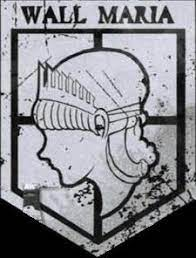
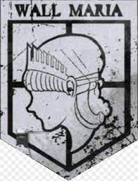
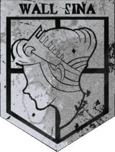

| Muralla Maria |
La Muralla María es la pared más externa del reino humano. Al igual que las otras murallas, María mide unos 50 metros de altura. La distancia entre María y la Muralla Rose es de aproximadamente 100 kilómetros. Tras 100 años de paz y prosperidad, la puerta del Distrito Shiganshina fue destruida por el Titán Colosal, permitiendo el paso de los titanes. El Titán Acorazado destruyó la puerta que conectaba el Distrito Shiganshina con la Muralla María, provocando así la perdida total de esta muralla. |
Distrito Shiganshina (sur),Distrito Quinta (oeste) |
 |
| Muralla Rose |
La Muralla Rose es la segunda pared exterior seguida de la Muralla María. La distancia entre la Muralla María y la Muralla Rose es de 100 kilómetros, y entre la Muralla Rose y Sina es de 130 kilómetros. Cinco años después de la pérdida de la Muralla María, el Titán Colosal destrozó la puerta del Distrito Trost. Sin embargo, Eren Jaeger utilizó su poder de titán para cubrir la brecha con una enorme roca, recuperando así el distrito. |
Distrito Utopía (norte)
Distrito Karanese (este)
Distrito Trost (sur)
Distrito Klorva (oeste) |
 |
| Muralla Sina |
La Muralla Sina es la muralla más interna. La distancia entre la Muralla Sina y la capital Mitras es de 250 kilómetros, y entre la Muralla Sina y Rose es de 130 kilómetros. Tiene como principal objetivo proteger el reino donde la monarquía y las clases altas residen. La ciudad en el interior de la Muralla Sina está custodiada por la Policía Militar, ya que tiene como objetivo la protección del rey. |
Distrito Orvud (norte)
Distrito Stohess (este)
Distrito Ehrmich (sur)
Distrito Yarckel (oeste)
Distrito Mitras (interior)
Ciudad Subterránea |
 |